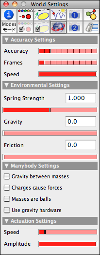
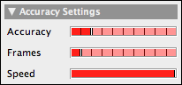
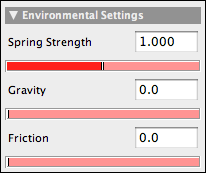
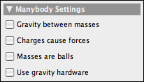
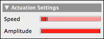

Environment
The environment plays a very special role in CindyLab. Unlike the other objects in CindyLab there is neither a specific mode nor a specific geometric object associated with it. Since the environment is an omnipresent object, it is more or less always there. The behavior of the Environment can be altered or influenced only by the inspector or by CindyScript. The environment allows one to influence the following factors:
- the numerical accuracy of the simulation
- environmental forces such as gravity and friction
- the definition of many-body systems
- the actuation of springs
We will first list all ways that these influences can be made and then present a few examples.
Inspecting the Environment
The environment inspector occupies a whole tab in the inspector window. If one presses the tab that is labeled with a small planet Earth, one enters the environment inspector, which contains four major groups.
 |
| The environment inspector |
The tasks of the particular groups are listed in detail below:
Accuracy
CindyLab is based on a numerical simulation of physical motion. The numerical simulation proceeds in discrete time steps. Between the discrete sample points of the motion there is practically no information about the physical system. This implies that in general, larger time steps imply less accuracy. Using fewer sample points, however, has the advantage of creating faster simulations. So there is a certain tradeoff between speed and accuracy. The user of CindyLab must be aware of this effect. Furthermore, it may be useful not to create a picture for every time step that has been created. The default settings of CindyLab are such that the simulation runs relatively fast and every simulated frame is indeed shown. If additional accuracy or fewer frames are required, one can adjust these parameters with the corresponding sliders in the environment inspector. Moving the accuracy slider to the right increases the accuracy of the simulation. Every tick corresponds roughly to a doubling of the accuracy. Increasing the accuracy without changing the frame rate is like viewing an animation in slow motion. This is sometimes a very useful effect.
 |
Corresponding to the accuracy slider, every tick of the frame slider corresponds to showing half as many frames. So if the frame slider is in position 4, there are 16 simulation steps between each frame. If the accuracy and the frame slider are exactly aligned, the simulation speed will still be the same as in the initial position (i.e., frames are shown for the identical time steps). The simulation is just much more exact. The additional computational effort that is required may then result in a slowdown of the perceived speed of the animation. We highly encourage the user to play with the two sliders in order to find the right setup for each simulation situation.
 |
| Traces of various accuracies |
The picture above demonstrates the influence of accuracy on a simulation. The simulation shows a planet moving under the gravitational influence of three suns. This situation is chaotic in the sense that a slight change in the initial parameters will lead to very different passes over time. Both the blue and the white trace are calculated with the same initial parameters. The accuracy for the white trace was four times that for the blue trace. Observe how the traces slightly diverge until they follow qualitatively very different paths.
Finally, the speed slider is synchronized with the animations speed slider in the viewing window.
Environmental Forces
In this part of the environment, parameters can be set that simultaneously apply to all simulation objects.
 |
The Spring Strength slider is a global parameter that is used to modify all spring constants (see Spring). Thus by moving this slider one can weaken or strengthen all interaction forces simultaneously.
The Gravity slider brings into existence a vertical gravitational force that applies to all masses. Sometimes it is more convenient to use this slider then to devise an individual gravity in Gravity mode.
The Friction slider is perhaps the most important slider of this group. It produces a frictional force that applies to all moving masses. Whenever one is interested in realistic simulations for everyday scenarios, one should add some friction. In this way, every simulation that is not driven by an external force will eventually come to rest in an equilibrium position. If no friction is present, mass-objects will usually move and oscillate forever.
The picture below shows a ballistic shot of a ball with and without friction.
 |  |
|
| Without friction | With friction |
Many-Body Behavior
With the usual modes interaction between two free masses, one generally has to specify that interaction explicitly by adding a Spring, a Rubber Band, or a Coulomb Force. However, it is often desirable to study an entire ensemble of objects that interact with each other, such as a cloud of electrons, a many-planet system, or a table with a large number of billiard balls. The three checkboxes in this group allow one to define such behavior. Since there is a wide range of applications of such behaviors, we have dedicated an entire section, Many-Particle Systems, to this topic.
 |
Spring Actuation
With the two actuation sliders one can influence the actuation of the resting lengths of a Spring. The actuations for all springs are synchronized and in a sense driven by a global motor. With these two sliders one can vary the global speed and strength of this actuation.
 |
The Environment and CindyScript
The environment allows for access to several important magnitudes and settings of the simulation. Since the environment is not directly bound to a geometric object, there is a function
simulation() that serves as a handle to the environment object. You can access, for example, the total kinetic energy in the simulation using simulation().ke. In particular, the values accessible via this object are the following:| Name | Writeable | Type | Purpose |
strength | yes | real | scaling factor of the simulation |
potential | no | real | the overall potential energy in the simulation; for this, all potential energies of springs, suns, and gravities, as well as interparticle potential energy, are summed up (defined only up to and additive constant that depends on the choice of coordinates) |
pe | no | real | abbreviation for potential
|
kinetic | no | real | the overall kinetic energy in the simulation; for this value, all kinetic energies of moving particles are summed up (defined only up to an additive constant that depends on the choice of coordinates) |
ke | no | real | abbreviation for kinetic
|
friction | yes | real | the global friction constant |
gravity | yes | real | the global gravity constant |
Page last modified on Sunday 04 of September, 2011 [21:56:52 UTC].
The original document is available at
http://doc.cinderella.de/tiki-index.php?page=Environment